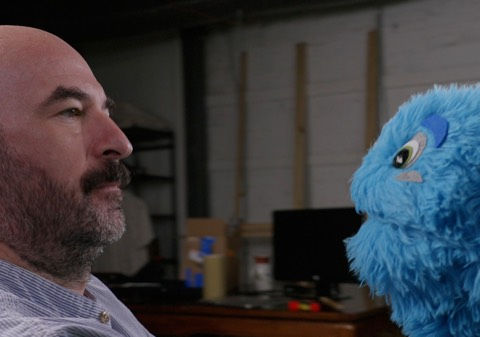

Technology & AI
Big Tech, algorithms, artificial intelligence and online harms.
6 films · 9 sessions · 39 people
Often together with: Documentary craftWhistleblowers & leaksMoney, banks & businessLegal & safety for reportersPublic records & FOIACriminal justice & prisons
Films
 The Six Billion Dollar ManEugene Jarecki2025 · 126 min
The Six Billion Dollar ManEugene Jarecki2025 · 126 min
I Hope This Helps!Daniel Freed2024 · 51 min- Another BodySophie Compton, Reuben Hamlyn2023 · 92 min
- This Is Not Financial AdviceZach Ingrasci, Chris Temple2023 · 88 min
 Do Not CirculateTiffany Sia2021 · 17 min
Do Not CirculateTiffany Sia2021 · 17 min Deep WebAlex Winter2015 · 86 min
Deep WebAlex Winter2015 · 86 min
Sessions
- 2026 · Fri Nov 6 · 12:15pmPanelFaked, Erased, Distorted: Does the Record Matter?Swapneel Mehta, Yvonne Ng, Sam Benstead, Mark Graham, Sig Libowitz
- 2025 · Sat Nov 1 · 10:00 AMWorkshopWorkshop: DIY Impact & Distribution for Short DocsSam Van Pykeren
- 2024 · Thu Nov 7 · 11:30 AMPanel · DX²Generative AI: Toward Best Practices in Documentary ProductionRachel Antell, Justine Bateman, Brandon Butler, Daniel Freed, Graham Sack
- 2024 · Sat Nov 9 · 12:45 PMWorkshopWorkshop: EditLife - Creating Short ContentRegi Allen
- 2023 · Thu Nov 2 · 3:45 PMPanelUsing and Abusing Deepfakes: The Dangers and Potential of AI in DocumentaryFatima Anwar, Sophie Compton, Lisa Zycherman, Patricia Aufderheide
- 2021 · Wed Oct 13 · 1:00pmPanelThe Chilling Effect of Libel Defamation CostsLynn Oberlander, Lynn D. Carrillo, Kelli L. Sager, Dale Cohen, Jesse Einstein
- 2018EventThe Glass Room Experience
- 2018 · Sat Oct 13 · 10:30 AMWorkshopWorkshop: Crypto PartyNima Fatemi, Harlo Holmes, Olivia Martin
- 2018 · Sat Oct 13 · 11:45 AMWorkshopWorkshop: Research DeskJohanna Hamilton, Shola Lynch, Margot Williams
People most involved
 Daniel FreedPanelist, filmmaker · 2024
Daniel FreedPanelist, filmmaker · 2024 Sophie ComptonFilmmaker, panelist · 2023
Sophie ComptonFilmmaker, panelist · 2023 Matthew ModineFilmmaker, panelist · 2024
Matthew ModineFilmmaker, panelist · 2024 Eugene JareckiPanelist, filmmaker · 2025
Eugene JareckiPanelist, filmmaker · 2025- Alex WinterFilmmaker, panelist · 2 editions, 2015–2018
- Joshua DratelPanelist · 2015
- Zach IngrasciFilmmaker · 2023

- Reuben HamlynFilmmaker · 2023
- Adam RackoffFilmmaker · 2024
- Dan MericaModerator · 2024
- Julian AssangeFilm subject · 2025
 Ellen NakashimaModerator · 2025
Ellen NakashimaModerator · 2025 Tiffany SiaFilmmaker, panelist · 2021
Tiffany SiaFilmmaker, panelist · 2021- Nima FatemiWorkshop leader · 2018
 Harlo HolmesWorkshop leader, panelist, moderator · 5 editions, 2015–2026Freedom of the Press Foundation
Harlo HolmesWorkshop leader, panelist, moderator · 5 editions, 2015–2026Freedom of the Press Foundation
- Johanna HamiltonFilmmaker, panelist, workshop leader · 2 editions, 2015–2018
- Shola LynchWorkshop leader · 2018Schomburg Center for Research in Black Culture, The New York Public Library

 Lisa ZychermanPanelist, workshop leader · 4 editions, 2018–2023Reporters Committee for Freedom of the Press
Lisa ZychermanPanelist, workshop leader · 4 editions, 2018–2023Reporters Committee for Freedom of the Press


 Brandon ButlerPanelist · 2024
Brandon ButlerPanelist · 2024

 Swapneel MehtaPanelist · 2026
Swapneel MehtaPanelist · 2026 Yvonne NgPanelist · 2026
Yvonne NgPanelist · 2026 Sam BensteadFilmmaker, panelist · 2026
Sam BensteadFilmmaker, panelist · 2026 Mark GrahamPanelist · 2026
Mark GrahamPanelist · 2026 Sig LibowitzModerator, panelist, workshop leader · 3 editions, 2024–2026JHU AAP Graduate Film and Media Program
Sig LibowitzModerator, panelist, workshop leader · 3 editions, 2024–2026JHU AAP Graduate Film and Media Program Lynn OberlanderPanelist · 2021
Lynn OberlanderPanelist · 2021 Lynn D. CarrilloPanelist · 2021
Lynn D. CarrilloPanelist · 2021